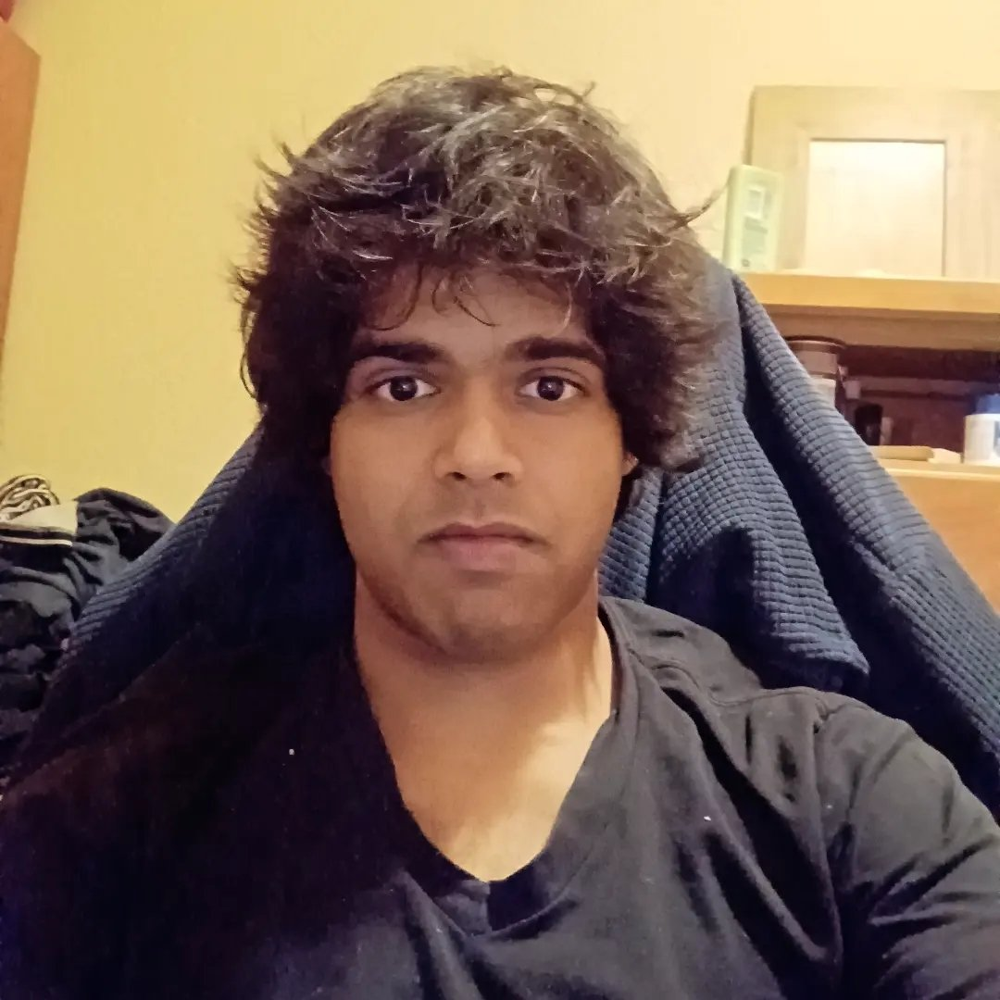

 Alan Nair
alannair@iitk.ac.in
BT-MT Dual Degree Student,
Department of Computer Science,
Indian Institute of Technology - KanpurIIT Kanpur
Kalyanpur
Kanpur - 208016
Uttar Pradesh
India
Note: Call me Alan. I am a dual degree student in the Department of Computer Science, IIT Kanpur.
I joined IITK in August 2017 as a B.Tech student in Computer Science.
In 2020, I converted my program to a BT-MT Dual Degree.
I am involved in the systems field and my interests lie along research.